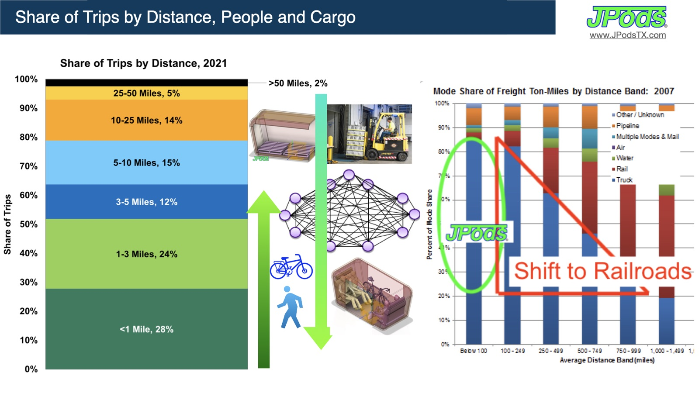
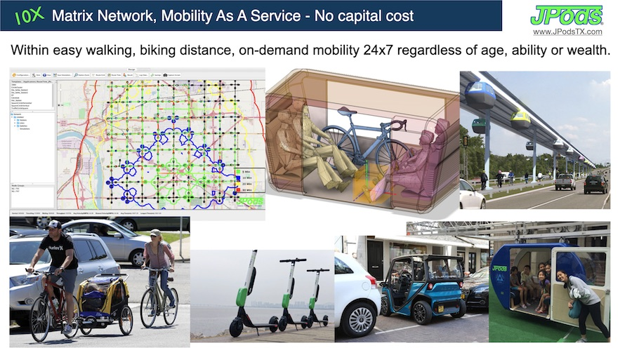
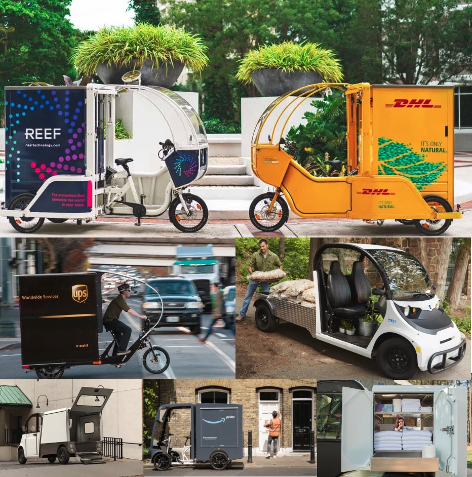
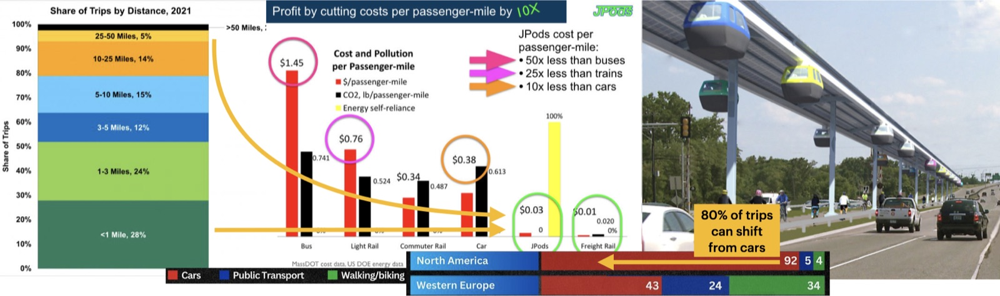
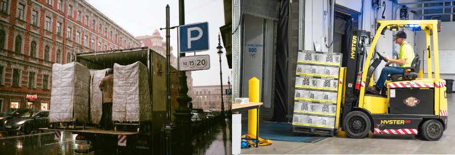
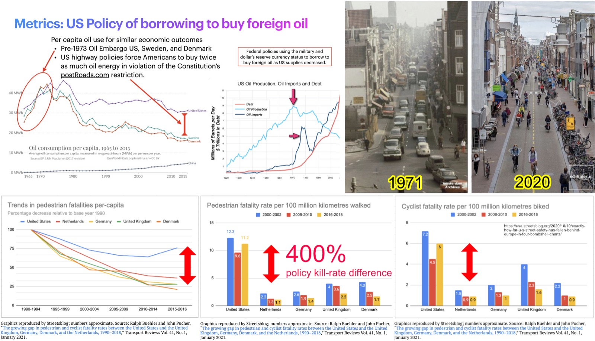
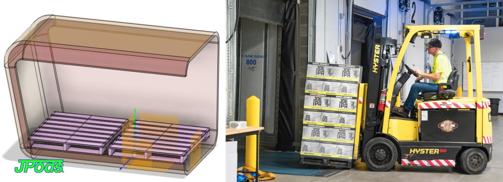

Heavy loads ride the rails. Fast trips take the air. Everything in between rides overhead, in solar-powered JPods. The street goes back to walking and biking.
The internet has three layers: fiber for the backbone, WiFi for the neighborhood, Bluetooth for the last few feet. The Physical Internet® has the same three, moving mass instead of data. The trouble today is that one layer, 2-ton cars and trucks on the street, is forced to do all three jobs badly.
Freight railroads are the heavy lift: 476 ton-miles per gallon, 188 times more efficient than cars. Airplanes are the high speed: people and urgent cargo between cities. Beyond a few hundred miles, freight is already shifting to rail. The backbone exists; it just needs the right connections at each end.

Solar-powered podcars on a mesh of slim guideways above the street. Station to station, neighborhood to neighborhood. People and cargo up to 500 kg, on demand, 24×7, whatever your age, ability, or wealth. Piers about 1 m² every 30 m: it crosses the city without dividing it. This is where the Physical Internet® is built.

Walking, bikes, cargo bikes, scooters, local use vehicles. When stations are a 7-minute bike ride or a 15-minute walk away, and 2-ton vehicles are no longer on the street, the last mile is safe again. Parcels arrive at a neighborhood station and go the last few blocks by cargo bike.

Commerce and community are pedestrian activities.
Most trips are short. 80% of trips could shift from cars.
More than half of all trips are under 3 miles, and 28% are under 1 mile. Those trips belong to walking, biking, and the middle mile. In North America 92% of trips go by car; in Western Europe it is 43%, with 34% by walking and biking. Moving a person costs $0.38 a passenger-mile by car and $0.03 by JPods.

Highways and rail lines move people through a place, but they divide it. A mesh overhead crosses without dividing and leaves the street below for people. People make friends, make money, and add value walking. Only 1.2% of land in the 35 largest U.S. cities is walkable, and that 1.2% produces 20% of GDP.
When 2-ton vehicles do the middle mile on the street, the street stops being a place.
Delivery trucks double-park and unload across the sidewalk. Cars sit idling in traffic. Children can't walk to school. For each kilometer walked, an American pedestrian is about ten times as likely to be killed as a Dutch one (11.2 vs 1.1 deaths per 100 million km, 2016–2018). This follows from policy. It is not an accident of culture. Amsterdam's streets in 1971 looked like ours. The chart below shows the same Amsterdam street in 1971 and in 2020.


Every transportation revolution triggered an energy revolution. The infrastructure that moves people and goods determines what energy system the economy runs on.
Railroads in the 1860s adapted engines to burn coal and oil, then used reduced transport costs to distribute those fuels to new markets. The railroad didn't just use coal — it created the coal economy. Highways didn't just use oil — they created the oil economy. Guideways with integrated solar collection don't just use solar — they create a distributed solar economy.
In 1935, the wind industry was building 80,000 windmills a year. 50% of U.S. electricity came from renewables. The Rural Electrification Act of 1936 wiped it out in favor of centralized coal. The highway system locked in oil. Change the transportation infrastructure and you change the energy system. That is the catalyst.
JPods guideways aren't just transit infrastructure — they are distributed solar power plants. The guideway structure carries solar collectors that produce far more energy than the pods consume.
| Mode | Wh / Passenger-Mile |
|---|---|
| JPods | 78 |
| Commuter Rail | 881 |
| Personal Car | 1,032 |
| Bus | 1,245 |
I'd put my money on the sun and solar energy. What a source of power! I hope we don't have to wait until oil and coal run out before we tackle that.
A mile of JPods guideway with 4-meter-wide solar collectors generates 5.79 MWh per day. The pods traveling on it consume a fraction of that. The surplus powers the surrounding neighborhood. The transportation network becomes the energy network. The 5X5 Standard: 5x the energy consumed, 5x the value of the land occupied.
Plantronics headquarters in Santa Cruz, CA: a 240-meter, 10-meter-wide solar array produces 367,410 kWh annually — 4.19 MWh per day per kilometer. At 38.5 Wh per vehicle-kilometer, that powers 50,000 vehicle-km per km of guideway daily. This is not theory. It is measured.
Economies collapse when Net Energy ratios fall below 5:1. Oil has crossed that threshold. Solar hasn't. The transition is not optional — it is geological.
The EIA reported U.S. peak fracking has arrived. Shale core exhaustion is mainstream. U.S. production expected down 20-30% within five years. Oil prices in the late 2020s will increase significantly. U.S. production will fall rapidly 2030-2050. Normal retooling requires ~100 years. We have 5.
Global solar PV cost fell 90% between 2010 and 2023. From $0.460/kWh to $0.044/kWh. Solar is now 56% cheaper than the lowest-cost fossil fuel. In 2010, solar was 4x more expensive. The economics have flipped. The infrastructure hasn't caught up.
Sunshine is spread out thin and so is electricity. Perhaps they are the same… This scheme of combustion to get power makes me sick to think of — it is so wasteful. It is just the old, foolish Prometheus idea, and the father of Prometheus was a baboon.
When we learn how to store electricity, we will cease being apes ourselves; until then we are tailless orangutans. You see, we should utilize natural forces and thus get all of our power. Sunshine is a form of energy, and the winds and the tides are manifestations of energy… Do we use them? Oh, no! We burn up wood and coal, as renters burn up the front fence for fuel. We live like squatters, not as if we owned the property.
…
There must surely come a time when heat and power will be stored in unlimited quantities in every community, all gathered by natural forces. Electricity ought to be as cheap as oxygen….
Cities think about moving people. They don't think about logistics, waste, or proximity. Those blind spots are where the Physical Internet® makes its strongest case.
Local retailers sell products they don't stock. Supplier warehouses hold the inventory. JPods delivers pallets to neighborhood stations. Last-mile by cargo bike to the door. The retailer's capital is freed. Inventory turns approach infinity.
The math: Department stores: 40% margin × 4 turns. Discount retail: 20% × 8 turns. Amazon: thin × high turns. Virtual inventory: your margin × no limit on turns.
Waste streamed continuously out of the city, sorted fresh on arrival. Items that go to landfill today because they are too degraded to identify or separate become recoverable when sorted fresh and continuously. Recycling rates rise dramatically when waste isn't rotted, compressed, and mixed in a weekly truck.

UPS, FedEx, DHL, and Amazon spend billions on middle-mile truck routes through traffic. JPods eliminates the most expensive, most congested segment. Carrier dead-heads return at ~1/10th the cost above street level with zero traffic. JPods handles middle-mile. Carriers own the van and the doorstep.
Reduced parking demand converts low-tax parking lots to high-tax productive land (sales tax + property tax). Reduced vehicle trips extend pavement life and cut lane-mile maintenance costs. Only 1.2% of land in the 35 largest U.S. cities is walkable — yet that 1.2% generates 20% of GDP. More walkable land = more GDP per acre.
| Metric | Trucks | JPods |
|---|---|---|
| Fuel | Diesel | Solar (net producer) |
| Middle-mile cost/ton-mile | High | ~1/10th |
| Dead-head return | In traffic, with driver | Above traffic, no driver |
| Street congestion | Adds to it | Zero |
| Delivery mode | Batch (weekly/daily) | Continuous flow |
| Efficiency | 25 ton-mpg (highway) | 470 ton-mpg (rail equiv.) |
The intellectual property behind the Physical Internet® — from autonomous solar-powered guideways to distributed data centers powered by transit infrastructure.
The foundational patent. Robots on grade-separated guideways for autonomous movement. Solar and wind power integrated into the physical structure of the guideway itself.
Distributed renewable energy gathering, storage, and application. The guideway as power plant — collaborative energy storage across the network.
Integrating just-in-time automated guideways with machine learning, railroad efficiency, and last-mile delivery. Subcontainers that fit pods, delivery vans, and cargo bikes.
Powering edge computing with guideway solar. Data centers distributed along the network, powered by the transportation infrastructure they serve.
Rapid-deployment guideways for disaster response, events, and emergency mobility. Infrastructure that can be stood up and moved.
Automated guideway networks for border logistics, security monitoring, and controlled movement along border corridors.
Money is a claim on future energy. An economy that burns more energy to extract energy than it gets back is an economy in decline. The Physical Internet® is the infrastructure that makes the solar economy physically possible.
Americans spend $2.76 trillion a year on traffic. Cars cost $9,282 per vehicle per year. They sit parked 95% of the time. Only 1.2% of land in the 35 largest U.S. cities is walkable — yet that 1.2% generates 20% of GDP. The Physical Internet® converts the 98.8% into productive, walkable, connected land.
The technology exists. The patents are filed. The economics work. The oil is running out. Start small. Iterate relentlessly.
{kind=link}
{kind=link}
{kind=link}
{kind=link}
{kind=link}
{kind=link}
{kind=link}
{kind=link}
{kind=link}
{kind=link}
{kind=link}